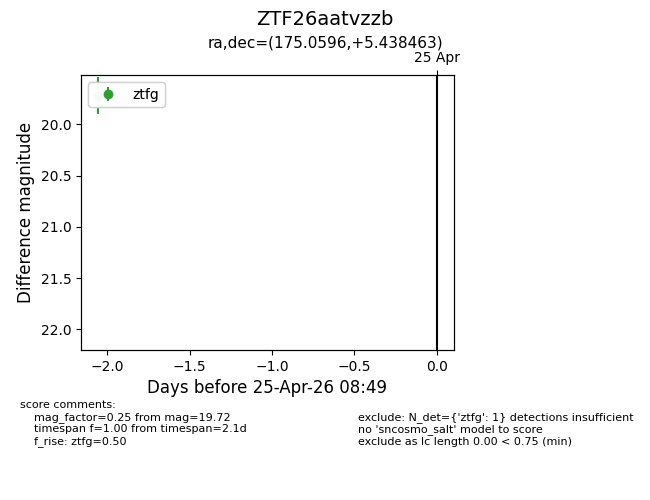
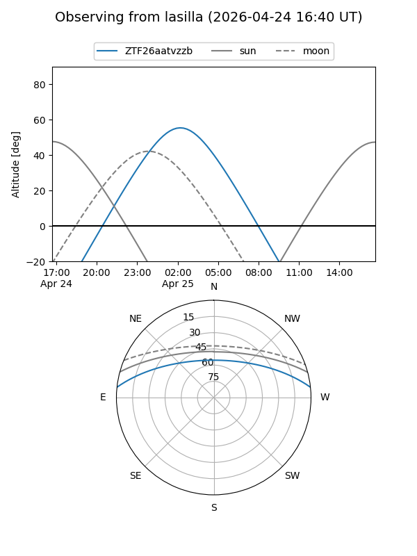
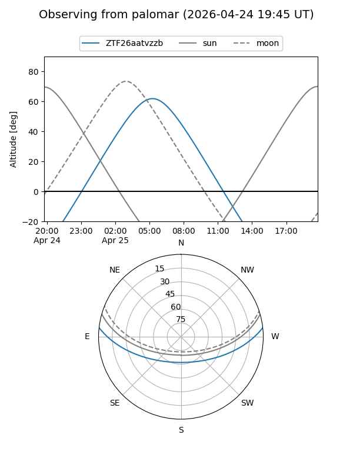

ZTF26aatvzzb
Target ZTF26aatvzzb at 2026-04-25 08:50
Aliases and brokers:
FINK: link
Lasair: link
ALeRCE: link
alt names
ZTF26aatvzzb (ztf,fink_ztf)
Coordinates:
equatorial (ra, dec) = 175.0596,+5.43846
equatorial (HMS+DMS) = 11:40:14.29,+05:26:18.47
galactic (l, b) = (261.7509,+62.47216)
Flags:
Photometry:
last ztfg=19.72
1 ztfg detections
Lightcurve

Visibility


Additional plots